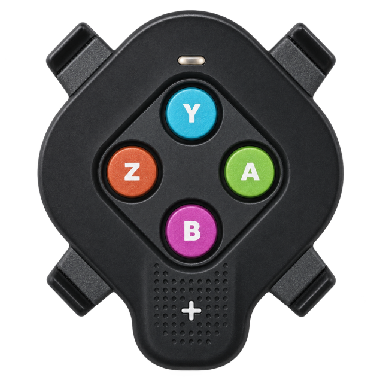
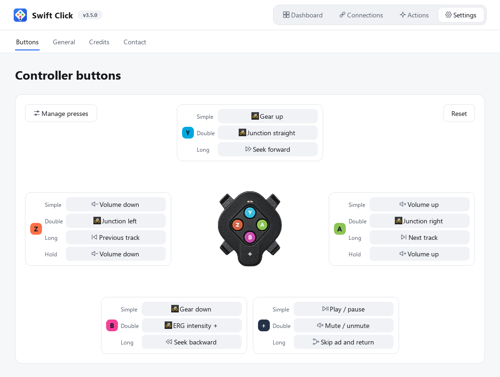
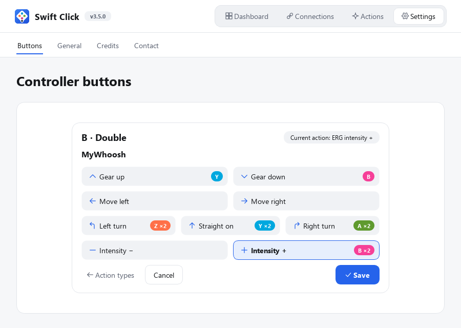
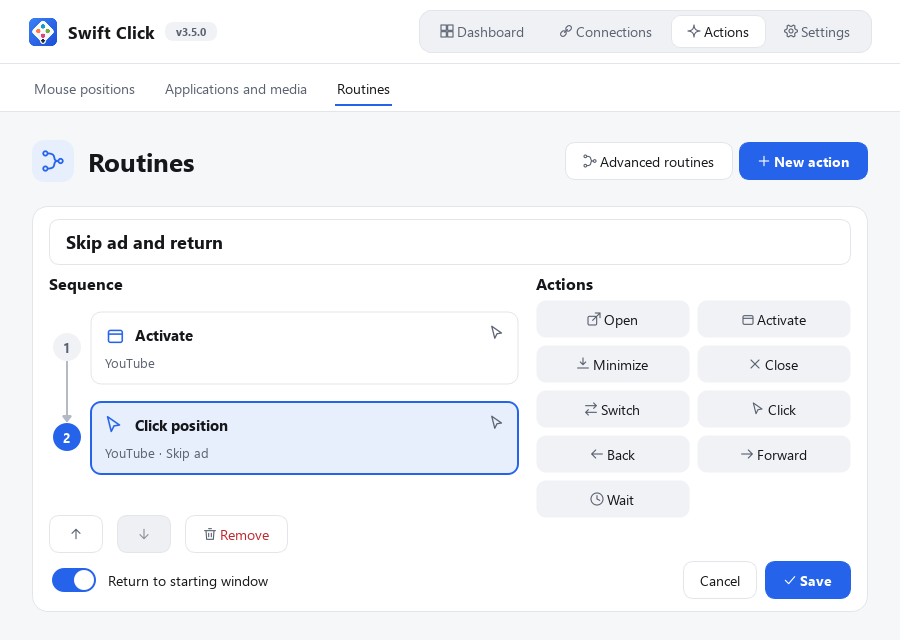
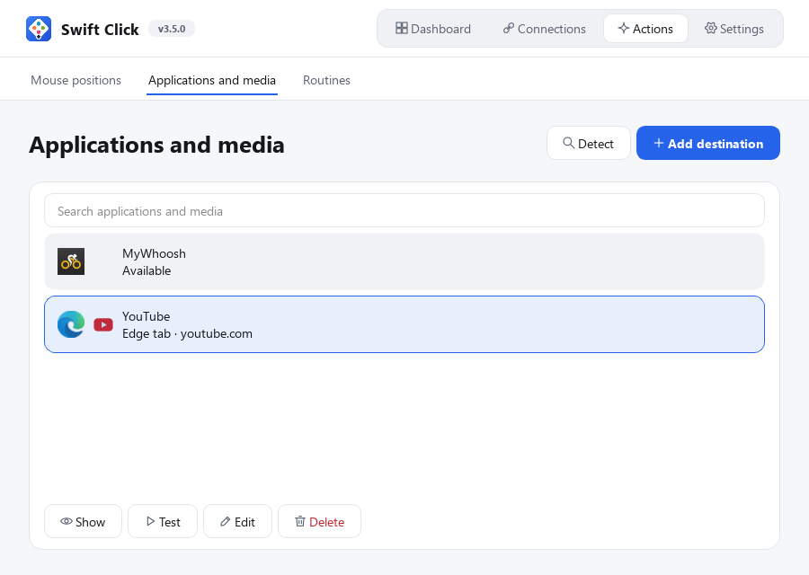

Free · Windows · No account
Ride MyWhoosh with your Zwift Click.
Swift Click turns the five buttons of a Zwift Click V2 into gear changes, steering, junction choices, ERG intensity, music controls and one-press routines, so you never leave the saddle to reach the keyboard or the mouse.

Why Swift Click
Many smart trainers ship with a Zwift Click. MyWhoosh is free to ride, but the Click doesn't pair with it for shifting. Swift Click bridges the two: it reads the controller over Bluetooth and talks to MyWhoosh on your local network through the OpenBikeControl protocol.
Connect
Pair the controller and MyWhoosh once, on a single Connections page with step-by-step guides.
Assign
Pick an action for each gesture of each button on a visual diagram of the controller.
Ride
Swift Click runs quietly in the background and sends every action the moment you press.
Everything from the handlebars
Five buttons, four gestures each: Simple, Double, Long and Hold. Up to twenty actions on one small controller.
Virtual shifting
Gear up and down in MyWhoosh over the network. MyWhoosh doesn't even need to be in front.
Steering & junctions
Move across the road for as long as you hold, and pick left, straight or right at junctions: Swift Click reads the direction tiles and clicks the right one.
ERG intensity
Raise or lower the intensity of an ERG workout without letting go of the bars, by 1 % to 10 % per press.
Music & video
Volume, mute, play / pause, previous / next track and video seek, with Spotify, Deezer, YouTube, Netflix and more.
Mouse clicks
Click a saved spot on screen, like a "Skip ad" button, then the pointer goes back where it was. It never clicks a covered window.
Routines
Chain steps behind one press: show YouTube, skip the ad, come back to MyWhoosh.
Your controller, your layout
Click a gesture on the diagram and pick its action. Only Simple is on by default so every press reacts instantly; choose Manage presses to switch on Double, Long or Hold where you need them.
| Gesture | When it fires |
|---|---|
| Simple | Short press, on release |
| Double | Two presses within 300 ms |
| Long | Held past 650 ms |
| Hold | Held past 1.5 s, repeats while held |

All of MyWhoosh on your controller
Every MyWhoosh action sits on one screen. A coloured badge shows which button and press already use it, such as Y ×2.
- Gear up / down, sent over the network
- Move left / right across the road while you hold
- Junctions: left turn, straight on, right turn
- ERG intensity − / +, from 1 % to 10 % per press under Settings → General → Advanced controls

Routines in one press
Build a routine visually: drag steps into the sequence, pick their target, reorder with the mouse, then test it before saving.
- Open or activate an app or a website tab
- Switch between two windows on each press
- Click a saved position, after checking it's visible
- Seek in a video, wait, minimize or close a window
If you switch windows yourself, the routine stops instead of pulling focus back. MyWhoosh is never minimized or moved.

Apps and websites
Save MyWhoosh, any application, or a browser tab such as YouTube, Netflix or Deezer, shown with the browser's and the site's logos. Tabs are matched by address, so a new video title doesn't break them, and the right tab is selected in Edge or Chrome.

Install in two minutes
Windows 10 22H2 or Windows 11 (64-bit) with Bluetooth, a right-hand Zwift Click V2, and MyWhoosh on the same PC or local network.
- Download the file ending in Setup.exe from the latest release and run it. Python is included.
- In Connections, wake the controller and choose Connect.
- Choose Connect for MyWhoosh, then in MyWhoosh click the OpenBikeControl handlebar icon and accept with YES.
- Assign your buttons under Settings → Buttons, and ride.
The installer isn't code-signed yet, so Windows may show a warning: choose More info → Run anyway. Only download Swift Click from the official GitHub page. Updating keeps your settings.
Frequently asked questions
More answers and live help in the community.
Is Swift Click really free?
Yes. No account, no subscription, no daily action limit and no telemetry. Settings, positions and logs stay on your PC.
Which controllers are supported?
The right-hand Zwift Click V2 (buttons Y, A, B, Z and +). The left-hand controller, Click V1, Zwift Play and Zwift Ride are not supported yet.
Does it work on Mac, iPad, Android or Apple TV?
Swift Click runs on Windows only. MyWhoosh itself can run on the same PC or on another device on the same network.
Does it work with Zwift, Rouvy or other apps?
Swift Click is built for MyWhoosh. If you'd like another app, suggest it in the community.
MyWhoosh won't connect.
Make sure both are on the same network. In Swift Click choose Connect for MyWhoosh, then click the OpenBikeControl icon in MyWhoosh and accept with YES. If Windows asks, allow Swift Click on private networks. Still nothing? Restart MyWhoosh and connect again.
I can only set one action per button.
Only Simple is on by default. Go to Settings → Buttons → Manage presses, tick Double, Long or Hold, choose Done, then assign actions to the new slots.
The junction buttons don't do anything.
MyWhoosh must be visible on screen when the direction tiles appear. If the direction you asked for isn't offered, nothing is clicked, on purpose.
Is it open source?
The interface sources are public on GitHub. The Bluetooth engine is private for now.
Join the Swift Click Community
Get help with setup, share your button layouts and routines, suggest features, and test new versions before they're released.